Can we help students learn about Gen AI biases in an open
exploration setting?
Debi
This project took Mayuri
Sridhar and I 10 Weeks. My role was UI/UX Designer and part-time Front-end
Engineer.
The usage of AI within K-12 Education is increasing
As machine learning techniques improve, the
integration
of AI into our lives will continue to expand at faster rates than ever. This has
a
significant impact on students throughout their early education. The use of AI models are
introduced
into classrooms as
early
as elementary or middle school, with few explanations of the risks or biases involved.
While biases within trained models are not easily fixable by students, the way in which
information can be interpreted. This contributes to how students critically
approach information throughout their lives.
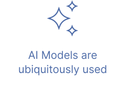
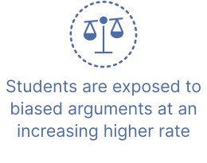

Educators are both frustrated and confused
Teachers we spoke to felt mixed feelings of confusion, powerlessness, and being overwhelemed
about the use of AI by
students. While some ban the usage entirely, others believe it increases access to
information, and can be empowering for students.
Additionally, teachers wanted some way of incorporating AI education into their curriculum
without disrupting traditional classroom topics entirely.

List of major stakeholders whose experiences shape the experience of Debi
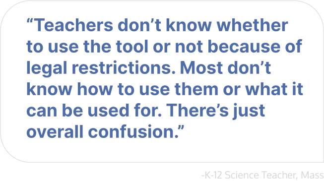
Quote from teaching professional talking about the lack of clarity and aid for helping
them
address AI in their day to day curriculums.
Building on existing language education was a priority
Drawing upon these insights, we felt it was really important to have a way for students to
learn and critically evaluate AI models, in the same way in which the Internet was
introduced to older generations through classes like "How to use the internet 101".
Through ideating, we identified a potential analogy to the tool we were envisioning
- fridge magnets.
We
wanted the tool to have a similar type of deconstruction and interactivity as standard
fridge magnets that children use to practice sentence-making when learning a new language.
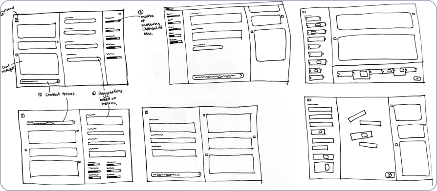
Sketch ideation of magnet components
Tool Development Process
Our development process involved multiple iterations based on testing feedback with
various
users throughout. After synthesising the research findings, we completed 2-3 design
sprints
to get the design to a prototype stage. Mayuri built out the prototype in React and then
we
worked between Figma and React quite consistently.
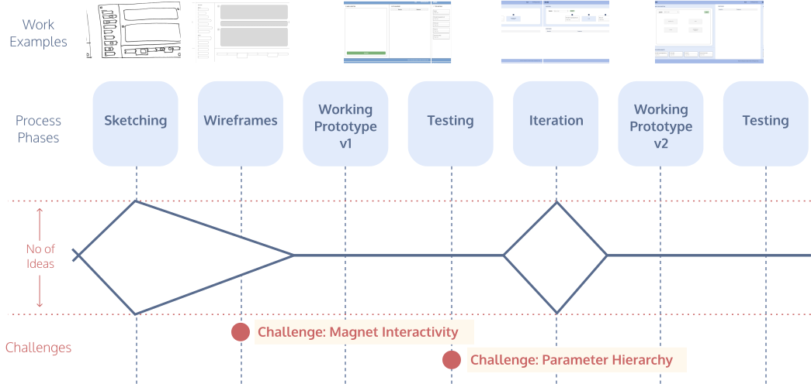
Diagram showing the design and engineering development process
Challenge: Magnet Interactivity
To build the magnet concept functionality, having an
interactive
interface component was key. Here are the iterations of that component.
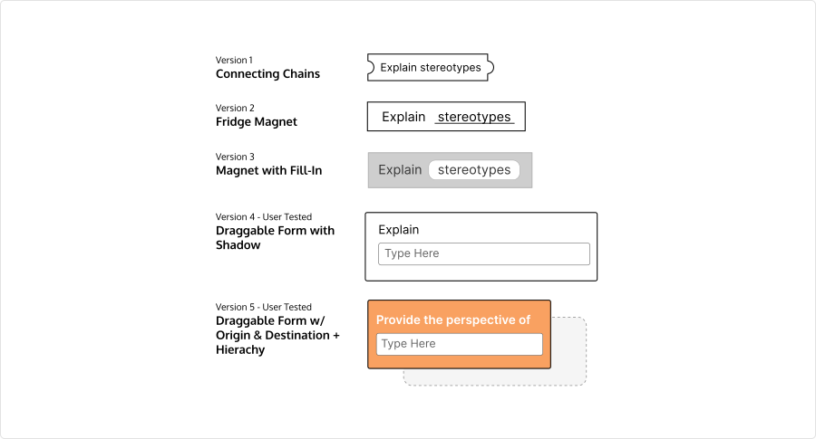
We iterated on the design of the 'magnet' a number of times to ensure that the interaction
style is more directly implied
In our earliest designs, we wanted the components to feel
more
like broken apart pieces of a puzzle, so the designs were initially thought to be like
chains
that could be connected together. However, due to other moving pieces being defined, we
ultimately decided on building the first prototype with a draggable form as the
‘magnet’.
This
is shown below.
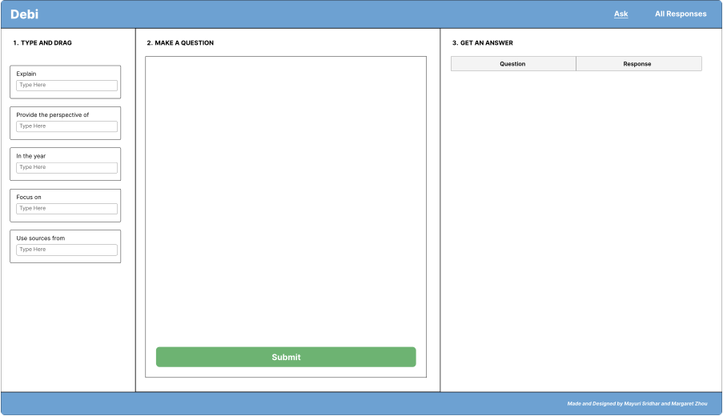
This was the very first prototype we built!
After testing this prototype, we found that most users
seemed
to
struggle with the draggable feature, and it took a little bit of time until they
discovered
the
functionality. This told us that the shadow was not helping. A 'whiteboard' component was
explored to add a visual call to action. Here is one exploration of that idea.
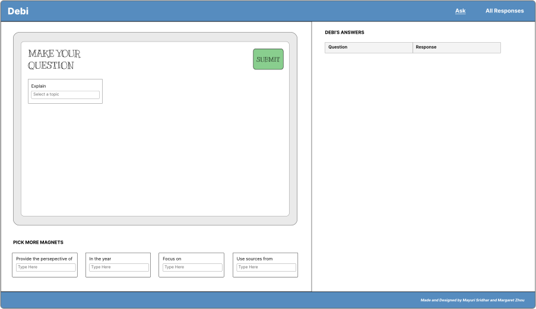
This iteration idea with a whiteboard inspired the direction for our final designs!
Ultimately, we decided that the magnet still allowed for
more
interactivity and play. This turned out to work very well as users
could
immediately better understand the interaction intent.
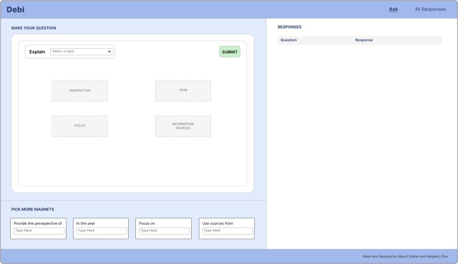
You can see how that whiteboard idea was continued through to the final design.
Challenge: Parameter Hierarchy in Prompt Engineering
Debi began as an explorative and slightly experimental
tool. As the tool was being envisioned, new papers, research, features, changes were
being made constantly. As we started planning the tool, features and problems became
more clear along the way. This manifested in the design through the parameter hierarchy,
shown below. In the beginning, while we were breaking down features of prompt
engineering, it seemed like all parameters would have equal importance, such as shown
below:
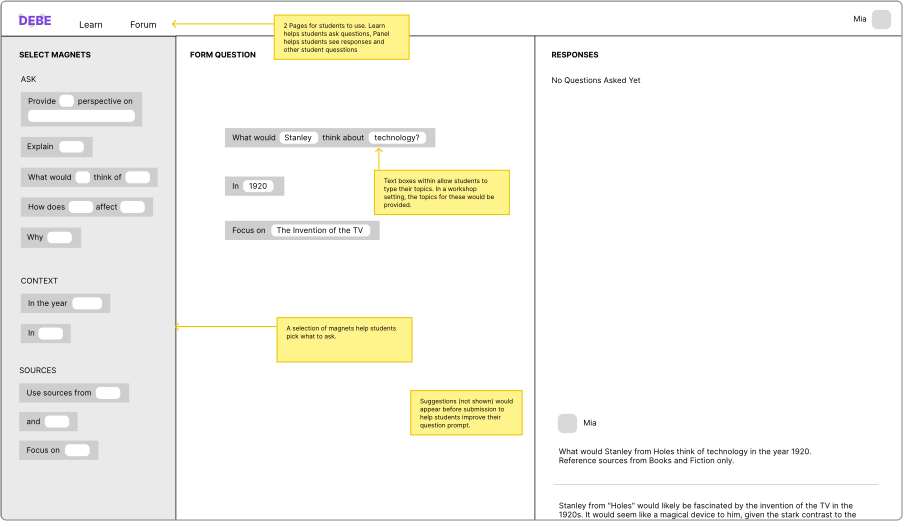
This was one of my first wireframes where I was just trying to explore what one of
debi's 'prompts' might look like.
After the first prototype testing, we learned 2 major
things. 1. Not all prompts are of equal importance. 2. LLM biases take time to uncover
when comparing within different tokens. These learnings manifested in 2 major feature
adjustments below.
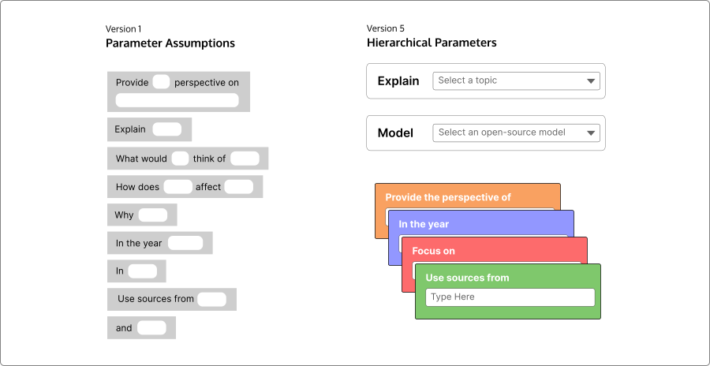
The initial assumptions I had split prompts by components of sentences. Later designs
split prompts by full
sentences and color was added to differentiate between the sentence purposes.
Reflections & Learnings
- When designing an interface strategy that users may not have seen before, the initial assumptions that a user might make about interactivity at the beginning are very important. Key features need to be familiar enough to be easily usable, and adoptable with little friction.